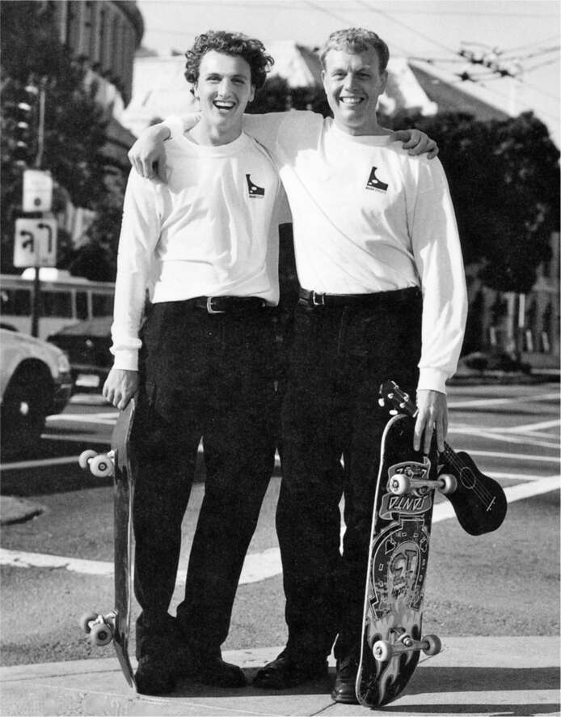

Burning Man
"Tôi muốn bắt đầu một công việc kinh doanh mới", anh họ của Musk, Lyndon Rive, nói khi họ đang lái xe RV đến Burning Man, lễ hội nghệ thuật và công nghệ hàng năm ở sa mạc Nevada, vào cuối mùa hè năm 2004. "Một công việc có thể giúp ích cho nhân loại và giải quyết biến đổi khí hậu."
"Hãy tham gia vào ngành năng lượng mặt trời", Musk trả lời.
Lyndon nhớ lại rằng câu trả lời đó giống như "mệnh lệnh hành quân" của mình. Cùng với anh trai Peter, anh bắt đầu làm việc để tạo ra một công ty mà sau này sẽ trở thành SolarCity. "Elon đã cung cấp hầu hết nguồn vốn ban đầu", Peter nhớ lại. "Anh ấy đã cho chúng tôi một hướng dẫn rõ ràng: đạt được quy mô có thể tạo ra tác động nhanh nhất có thể."
Ba anh em họ Rive của Musk—Lyndon, Peter và Russ—là con trai của chị gái song sinh của bà Maye Musk, và họ lớn lên cùng Elon và Kimbal, cùng nhau đạp xe, đánh nhau và bày mưu tính kế kiếm tiền. Giống như Elon, họ đến Mỹ theo đuổi giấc mơ kinh doanh ngay khi có thể rời khỏi Nam Phi. Cả gia tộc, Peter nói, đều theo cùng một phương châm: “Rủi ro là một loại nhiên liệu.”
Lyndon, em út, đặc biệt kiên trì. Niềm đam mê của anh là môn khúc côn cầu dưới nước, có lẽ là môn thể thao thử thách sự bền bỉ tột bậc, và anh đã đến Mỹ với tư cách là thành viên của đội tuyển quốc gia Nam Phi. Anh ở lại căn hộ của Elon, thích không khí ở Thung lũng Silicon, và dẫn đầu thành lập một công ty hỗ trợ máy tính cùng với các anh trai của mình. Họ trượt ván khắp Santa Cruz để thực hiện các cuộc gọi dịch vụ. Cuối cùng, họ đã tự phát triển phần mềm để tự động hóa nhiều tác vụ, giúp họ bán công ty cho Dell Computers.
Sau khi Elon đề nghị họ tham gia vào lĩnh vực kinh doanh tấm pin mặt trời, Lyndon và Peter đã cố gắng tìm hiểu lý do tại sao rất ít người mua chúng. Câu trả lời rất đơn giản. “Chúng tôi nhận ra rằng trải nghiệm của người tiêu dùng rất tệ và chi phí trả trước cao là một rào cản lớn”, Peter nói. Vì vậy, họ đã đưa ra một kế hoạch để đơn giản hóa quy trình. Khách hàng sẽ gọi đến một số điện thoại miễn phí, đội ngũ bán hàng sẽ sử dụng hình ảnh vệ tinh để đo kích thước mái nhà và lượng ánh sáng mặt trời mà nó nhận được, sau đó công ty sẽ đưa ra hợp đồng ghi rõ chi phí, khoản tiết kiệm tiện ích và các điều khoản tài chính. Nếu khách hàng đồng ý, công ty sẽ cử một đội ngũ mặc đồng phục màu xanh lá cây đến lắp đặt các tấm pin và xin hoàn thuế của chính phủ. Mục tiêu là tạo ra một thương hiệu tiêu dùng trên toàn quốc. Musk đã đầu tư 10 triệu đô la để khởi động công ty. Vào ngày 4 tháng 7 năm 2006—đúng lúc Tesla sắp ra mắt chiếc Roadster—họ đã ra mắt SolarCity, với Musk là chủ tịch hội đồng quản trị.
Trong một thời gian, SolarCity hoạt động khá tốt. Đến năm 2015, công ty chiếm một phần tư tổng số lắp đặt năng lượng mặt trời không do công ty tiện ích thực hiện. Nhưng công ty gặp khó khăn trong việc tìm kiếm một mô hình kinh doanh. Ban đầu, công ty cho khách hàng thuê các tấm pin mặt trời mà không mất chi phí trả trước. Điều này dẫn đến khoản nợ ngày càng tăng của công ty, và cổ phiếu giảm từ mức cao 85 đô la mỗi cổ phiếu vào năm 2014 xuống còn khoảng 20 đô la một cổ phiếu vào giữa năm 2016.
Musk ngày càng thất vọng với các hoạt động của công ty, đặc biệt là cách công ty dựa vào một lực lượng bán hàng hung hăng được trả lương theo hoa hồng. “Chiến thuật bán hàng của họ trở nên giống như những trò lừa đảo đến từng nhà bán cho bạn hộp dao hoặc thứ gì đó tồi tệ như vậy”, Musk nói. Bản năng của anh luôn ngược lại. Anh ấy chưa bao giờ nỗ lực nhiều vào bán hàng và tiếp thị, và thay vào đó tin rằng nếu bạn tạo ra một sản phẩm tuyệt vời, doanh số bán hàng sẽ theo sau.
Musk bắt đầu thúc ép các anh em họ của mình. “Các anh là công ty bán hàng hay công ty sản phẩm?”, anh liên tục hỏi. Họ không thể hiểu được sự ám ảnh của anh về sản phẩm. “Chúng tôi đang chiếm lĩnh thị phần,” Peter nói, “và Elon lại đặt câu hỏi về những thứ thẩm mỹ và chỉ ra một thứ gì đó như hình dáng của những chiếc kẹp và tức giận nói rằng chúng thật xấu xí.” Musk trở nên thất vọng đến mức có lúc anh đe dọa sẽ từ chức chủ tịch. Kimbal đã khuyên anh đừng làm vậy. Thay vào đó, vào tháng 2 năm 2016, anh đã gọi điện cho các anh em họ của mình và nói với họ rằng anh muốn Tesla mua lại SolarCity.
Sau khi khai trương nhà máy pin tại Nevada, Tesla bắt đầu sản xuất pin cỡ tủ lạnh dành cho gia đình, gọi là Powerwall. Sản phẩm này có thể kết nối với các tấm pin năng lượng mặt trời, chẳng hạn như những tấm pin do SolarCity lắp đặt. Ý tưởng này đã giúp Musk tránh được sai lầm mà nhiều lãnh đạo doanh nghiệp mắc phải, đó là định nghĩa quá hẹp về lĩnh vực kinh doanh của mình. "Tesla không chỉ là một công ty ô tô," ông nói khi Powerwall được công bố vào tháng 4 năm 2015. "Đó là một công ty đổi mới năng lượng."
Với mái nhà năng lượng mặt trời kết nối với pin gia đình và một chiếc Tesla trong ga-ra, mọi người có thể thoát khỏi sự phụ thuộc vào các công ty điện lực và dầu mỏ lớn. Sự kết hợp này có thể cho phép Tesla đóng góp nhiều hơn vào cuộc chiến chống biến đổi khí hậu so với bất kỳ công ty nào khác - có lẽ là bất kỳ tổ chức nào khác - trên thế giới. Tuy nhiên, có một vấn đề với ý tưởng năng lượng tích hợp của Musk: công ty năng lượng mặt trời của anh em họ ông không thuộc Tesla. Việc Tesla mua lại SolarCity sẽ đạt được hai mục tiêu: cho phép ông tích hợp mảng kinh doanh năng lượng gia đình và cứu vãn doanh nghiệp đang gặp khó khăn của anh em họ mình.
Ban đầu, hội đồng quản trị của Tesla đã phản đối, điều này khá bất thường. Họ thường rất chiều theo Musk. Thỏa thuận được đề xuất dường như là một gói cứu trợ cho anh em họ của Musk và khoản đầu tư SolarCity của Musk vào thời điểm Tesla đang gặp khó khăn về sản xuất. Nhưng bốn tháng sau, hội đồng quản trị đã chấp thuận ý tưởng này, sau khi tình hình tài chính của SolarCity trở nên tồi tệ hơn. Tesla đề nghị mức phí bảo hiểm khá cao 25% cho việc mua cổ phiếu của SolarCity, mà Musk là cổ đông lớn nhất. Musk đã rút lui khỏi một vài cuộc bỏ phiếu của hội đồng quản trị, nhưng ông đã tham gia vào nhiều cuộc thảo luận riêng với anh em họ của mình tại SolarCity.
Khi Musk công bố thỏa thuận vào tháng 6 năm 2016, ông gọi đó là điều "hiển nhiên" và "đúng về mặt pháp lý và đạo đức". Việc mua lại này phù hợp với "kế hoạch tổng thể" ban đầu của ông cho Tesla, được viết vào năm 2006: "Mục đích bao trùm của Tesla Motors là giúp đẩy nhanh quá trình chuyển đổi từ một nền kinh tế hydrocarbon khai thác và đốt cháy sang một nền kinh tế điện mặt trời."
Điều này cũng phù hợp với bản năng kiểm soát toàn bộ mọi nỗ lực của Musk. "Elon đã khiến chúng tôi nhận ra rằng bạn phải kết hợp năng lượng mặt trời và pin," người anh họ Peter của ông nói. "Chúng tôi thực sự muốn cung cấp một sản phẩm tích hợp, nhưng điều đó rất khó khăn khi các kỹ sư ở hai công ty khác nhau."
Thỏa thuận đã được 85% cổ đông "không liên quan" (nghĩa là Musk không thể bỏ phiếu bằng cổ phiếu của mình) của cả Tesla và SolarCity chấp thuận. Tuy nhiên, một số cổ đông của Tesla đã kiện. Họ cáo buộc: "Elon đã khiến Hội đồng quản trị dễ bảo của Tesla chấp thuận việc mua lại một SolarCity đang mất khả năng thanh toán với mức giá không công bằng, nhằm cứu vãn khoản đầu tư đang gặp khó khăn của ông (và các thành viên khác trong gia đình)." Năm 2022, một tòa án chancery Delaware đã phán quyết có lợi cho Musk: "Việc mua lại đánh dấu một bước tiến quan trọng đối với một công ty đã nhiều năm nói rõ với thị trường và các cổ đông rằng họ dự định mở rộng từ một nhà sản xuất ô tô điện thành một công ty năng lượng thay thế."
Trong một cuộc gọi với các nhà đầu tư SolarCity vào tháng 8 năm 2016, ngay trước cuộc bỏ phiếu của cổ đông sẽ hoàn tất việc sáp nhập với Tesla, Musk đã gợi ý về một sản phẩm mới sẽ thay đổi ngành công nghiệp. "Điều gì sẽ xảy ra nếu chúng tôi có thể cung cấp cho bạn một mái nhà trông đẹp hơn nhiều so với mái nhà thông thường? Nó tồn tại lâu hơn nhiều so với mái nhà thông thường? Trò chơi hoàn toàn khác."
Ý tưởng mà ông và những người anh em họ Rive đang nghiên cứu là "mái nhà năng lượng mặt trời" chứ không phải các tấm pin mặt trời lắp đặt trên mái nhà thông thường. Nó sẽ được làm từ những viên ngói có tích hợp sẵn pin mặt trời bên trong. Ngói năng lượng mặt trời có thể thay thế mái nhà hiện tại hoặc được lắp đặt trên mái nhà cũ. Dù bằng cách nào thì nó cũng sẽ trông giống như một mái nhà chứ không phải một loạt tấm pin mặt trời được gắn trên mái.
Dự án mái nhà năng lượng mặt trời đã gây ra mâu thuẫn lớn giữa Musk và những người anh em họ của mình. Vào tháng 8 năm 2016, khoảng thời gian ông hé lộ về sản phẩm mới, Peter Rive đã mời Musk đến kiểm tra phiên bản mà công ty đã lắp đặt trên mái nhà của một khách hàng. Đó là mái kim loại liền mạch, nghĩa là các pin mặt trời được gắn vào các tấm kim loại thay vì ngói.
Khi Musk đến, Peter và mười lăm người đang đứng trước ngôi nhà. "Nhưng như thường lệ," Peter nhớ lại, "Elon đến muộn và sau đó ngồi trong xe xem điện thoại trong khi tất cả chúng tôi đều lo lắng chờ anh ấy ra ngoài." Khi ông bước ra, rõ ràng là ông đang rất tức giận. "Cái này thật tệ," Musk nói. "Thật là tệ hại. Kinh khủng. Các anh đang nghĩ cái gì vậy?" Peter giải thích rằng đó là điều tốt nhất họ có thể làm trong thời gian ngắn để tạo ra một phiên bản có thể lắp đặt được. Điều đó có nghĩa là họ phải thỏa hiệp về mặt thẩm mỹ. Musk yêu cầu họ tập trung vào ngói năng lượng mặt trời thay vì mái kim loại.
Làm việc suốt ngày đêm, anh em nhà Rive và đội ngũ SolarCity của họ đã chế tạo được một số mẫu ngói năng lượng mặt trời, và Musk lên lịch ra mắt công chúng vào tháng 10. Buổi ra mắt được tổ chức tại phim trường Universal Studios Hollywood, nơi các mẫu mái nhà năng lượng mặt trời được lắp đặt trên một dãy nhà từng được sử dụng trong bộ phim truyền hình Desperate Housewives. Có bốn phiên bản, bao gồm cả những phiên bản trông giống như đá phiến Pháp và ngói ống Tuscan, cùng với một ngôi nhà có mái kim loại mà Musk ghét. Khi Musk đến thăm hai ngày trước sự kiện và nhìn thấy phiên bản kim loại, ông đã nổi giận. "Phần nào trong câu 'Tôi ghét cái sản phẩm này' mà các anh không hiểu?" Một trong những kỹ sư đã phản bác, nói rằng nó trông ổn đối với anh ta và đó là loại dễ lắp đặt nhất. Musk kéo Peter sang một bên và nói với anh ta, "Tôi nghĩ anh chàng này không nên ở trong đội." Peter đã sa thải kỹ sư đó và cho tháo dỡ mái kim loại trước sự kiện công khai.
Hai trăm người đã đến Universal Studios để tham dự buổi thuyết trình. Musk bắt đầu bằng cách nói về mức độ carbon dioxide đang gia tăng và mối đe dọa của biến đổi khí hậu. "Hãy cứu chúng tôi, Elon!" ai đó hét lên. Lúc đó, Musk chỉ tay ra phía sau. "Những ngôi nhà mà các bạn thấy xung quanh đây đều là nhà năng lượng mặt trời", ông nói. "Các bạn có nhận thấy không?"
Bên trong mỗi ga ra là phiên bản nâng cấp của Powerwall của Tesla cùng với một chiếc xe Tesla. Các viên ngói năng lượng mặt trời sẽ tạo ra điện năng có thể được lưu trữ trong Powerwall và trong pin của xe. "Đây là tương lai tích hợp," ông nói. "Chúng ta có thể giải quyết toàn bộ bài toán năng lượng."
Đó là một tầm nhìn cao cả, nhưng nó phải trả giá bằng cá nhân. Trong vòng một năm, cả Peter và Lyndon Rive đều rời công ty.

Lyndon và Peter Rive